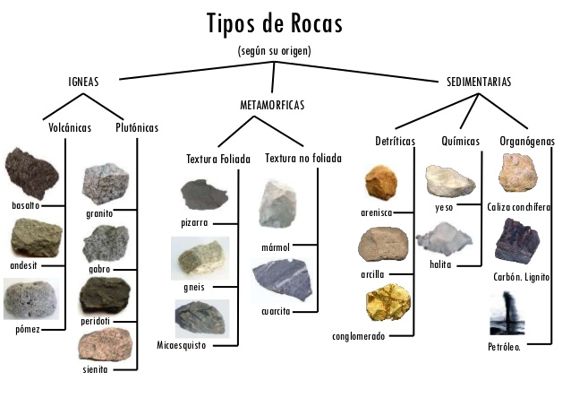
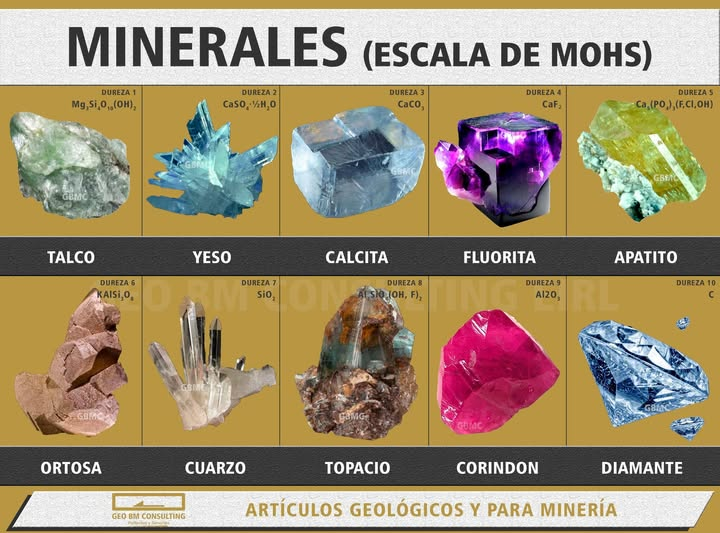

Más información acerca de minerales:

- Rocas ígneas: magma
(roca fundida)(roca fundida, sólidos y gases) el cuál es expulsado de la corteza terrestre, que posteriormente se enfría y endurece.
Ejemplos: Obsidiana, Basalto, Granito.- Rocas sedimentarias: rocas ígneas, sedimentarias o metamórficas que son compactadas en capas con el tiempo despues de haber sido erosionadas y fragmentadas por los distintos agentes climáticos.
Ejemplos: Arenisca, Caliza, Limolita.- Rocas metamórficas: rocas sendimentarias o igneas, que son sometidas a una gran temperatura y una gran presión, gracias a esto, son transformadas a rocas metamórficas.
Ejemplos: Pizarra, Mármol, Cuarcita.
Dureza: es la resistencia/oposición que tienen los minerales hacia golpes, abrasión, rayaduras, cortes, etc. Para medir la dureza de un mineral existe la escala de Mohs, yendo desde el mineral más blando y de menor dureza como el Talco (1), al más duro y resistente como el diamante (10), siendo este el mayor en la escala de Mohs. Los demás minerales que no se encuentran en la escala se les puede encontrar de igual forma su dureza, viendo que minerales pueden rayar y por cuales pueden ser rayados.

Densidad: la densidad de un mineral es una de sus propiedades más importantes, ya que es reflejo directo de su quimismo y de su estructura cristalina. La densidad se define como masa por unidad de volumen, y sus unidades son gramos por centímetro cúbico (cm3). El peso específico (G) o densidad relativa de un mineral es un número que expresa la relación entre su peso y el peso de un volumen igual de agua a 4ºC (a esta temperatura la densidad del agua es máxima). Si un mineral tiene peso específico 2, ello significa que una muestra determinada de dicho mineral pesa dos veces más de lo que pesaría un volumen igual de agua.
Brillo: el aspecto general de la superficie de un mineral cuando se refleja la luz se conoce con el nombre de brillo. El brillo de los minerales puede ser de dos tipos, metálico y no metálico. No hay una línea clara de separación entre estos dos grupos, y a ciertos minerales que están entre ambos tipos se les conoce algunas veces con el nombre de submetálicos. Un mineral que tenga el aspecto brillante de un metal tiene un brillo metálico que es propio de minerales opacos, con índice de refracción inferior a 3, como por ejemplo pirita, calcopirita, galena, oro o plata. Estos minerales son completamente opacos a la luz, y, suelen dejar una huella negra o muy oscura. Todos los minerales con brillo no metálico son, en general, de colores claros y transmiten la luz, si no a través de secciones gruesas, sí, al menos, a través de láminas delgadas. Suelen tener un índice de refracción inferior a 2.6. La huella de un mineral no metálico es incolora o de color muy débil.
El brillo no metálico presenta dos subtipos:
- Brillo adamantino: el cual presentan minerales que brillan más y muestran destellos, como por ejemplo cerusita, anglesita, zircón y por supuesto el diamante.
- Brillo vítreo: El cual recuerda al vidrio y que presentan el 70% de los minerales, tales como el cuarzo, la turmalina, la calcita o la fluorita.
Subcategorías del brillo no metálico:
Resinoso2.2.1: que tiene el brillo de la resina
(Ej: La blenda y el azufre).
Nacarado2.2.2: que tiene el brillo irisado de la perla. Se observa por lo general en las superficies de los minerales paralelas a los planos de exfoliación
(Ej: La apofilita en el plano basal y la superficie de exfoliación del talco).
Graso2.2.3: que parece estar cubierto con una delgada capa de aceite. Este brillo resulta de la luz difundida por una superficie microscópicamente rugosa
(Ej: El apatito, la nefelina y algunas especies de esfalerita y de cuarzo masivo).
Sedoso2.2.4: como la seda. Resultado de la reflexión de la luz sobre un agregado paralelo de fibras finas.
(Ej: Yeso fibroso, malaquita y serpentina).
Color: los minerales de un mismo grupo, pueden adoptar distintos colores, siendo las causas más comúnes de este fenómeno, la forma en la que la luz pasa a través del cristal, malformaciones estructurales, impurezas de otros minerales o elementos, exposición a radiación, ya sea de manera natural o artificial, oxidación, alteraciones meteóricas, etc. Los minerales que poseen una variedad amplia de colores se les llamay a los que solo presentan un color constante se les llamaAlocromáticos.Idiocromáticos
Forma: los minerales pueden presentarse en, tanto formas irregulares como regulares o geométricas, la forma que estos adoptan es producto de la manera en la que los átomos de diferentes elementos que componen el mineral se acomodan, unen y estructuran en el proceso de formación y critalización, la forma dependerá si en el ambiente en el que sucede el proceso se encuentra en equilibrio o no.
Tipos de cristales según su forma
Cristales simples Agregados cristalinos
- Acicular: Cristales delgados como agujas.
- Hojoso: Cristales alargados, aplastados, de forma laminar.
- Equant: Cristales equidimensionales.
- Bladed: Cristales alargados, planos, como hojas de cuchillo.
- Capilar y filiforme: Cristales como cabello o hebras.
- Prismático o columnar: Disposición de caras paralelas formando columnas.
- Blocky: Cristales equant con secciones cuadrangulares o rectangulares
- Tabular: Cristales en placas planas.
- Dendrítico (arborescente): Arborescencia en ramas divergentes y delgadas, semejante a plantas.
- Divergente o radial: Grupos de cristales radiales.
- Hojoso o micaceo: Un agregado de muchas hojas aplastadas.
- Fibroso: En agregados fibrosos delgados, paralelos o radiales.
- Globular: Individuos radiales que forman grupos esféricos o semiesféricos.
- Reticulado: Agrupación de cristales delgados en redes.
- Drusa: Una superficie es una drusa cuando está cubierta por una capa de pequeños cristales.
- Plumoso: Formado por escamas finas con una estructura divergente o plumosa.
- Estrellado: Individuos radiales que forman grupos concéntricos o en forma de estrellas.
- Botroidal: Cuando las formas globulares se agrupan como racimos de uvas.